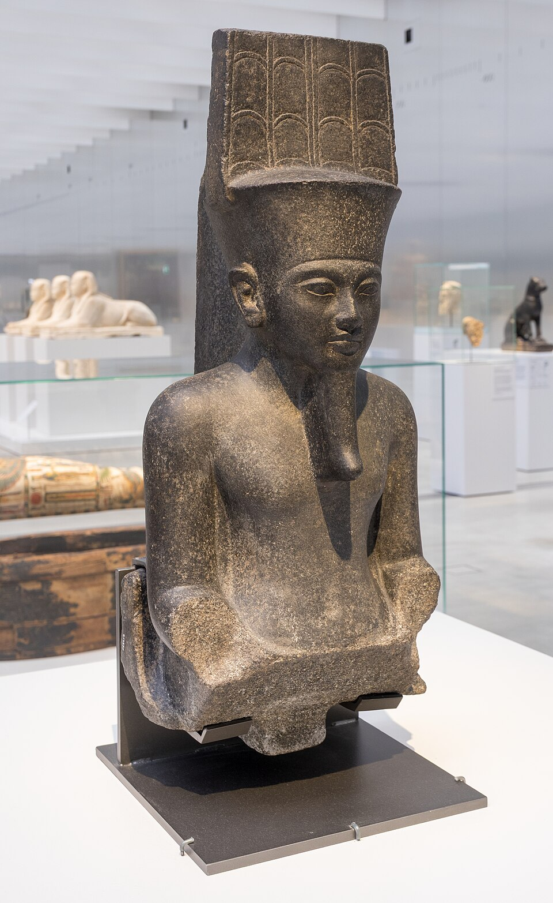

Кто такой Амон
Амон значит «скрытый», «невидимый»: так египтяне называли ветер — его чувствуешь, но не видишь; и тайну — её носит в себе всякий. Изначально — фиванский местный бог с супругой Мут и сыном-луной Хонсу (фиванская триада), почитавшийся с Древнего царства, но мало значимый. Всё меняет Среднее царство: фиванские князья, объединившие Египет (~2055 до н. э.), делают своего бога «главным», а Новое царство и империя превращают его в имперского: Амон сливается с солнцем — Амон-Ра, «Амон-Ра-Херахти», царь тронов обоих земель.
Его «скрытость» стала теологией: гимны зовут его «духовнее духов», «того, чьё имя неизвестно», «кто сделал себя» — монотеистический оттенок, который многие исследователи считают фоном дляLater монотеизма (спорный тезис, но египетские гимны Амону и вправду звучат почти как псалмы).
Иконография
Амон — человек с двойным пером на высокой короне (атев: две страусиные перьевые «тарелки» с солнцем и уреями), кожа иногда сине-чёрная — цвет ночи и скрытости; в «праздничной» форме — с головой барана (круторогий баран = плодородие и сила; «Амон-Мин» — с иконой производительности) и как гусь («Амон-гусь», «великий крикливец», который снес «яйцо» — мир? — по гермопольским мотивам). Священные животные: баран и гусь; отсюда — алея сфинксов с бараньими головами между Карнаком и Луксором.
Карнак, барка и оракулы
Дом Амона — Карнак, «Ипет-Сут», крупнейский храмовый комплекс мира; второй «южный гарем» — Луксор. Бог жил в статуе внутри наоса: его одевали, кормили, «пробуждали» каждое утро. Раз в год, в опетский праздник, золотая барка с статуей Амона «плыла» по суше на плечах жрецов по аллее сфинксов к Луксору — обновлять царскую власть; народ веселился, молил о чуде — и получал его: барку носили «вперёд-назад» (на вопрос «да» барка «кивала», идя к просителю; на «нет» — отстранялась). Так работал оракул Амона: к нему приходили с тяжбами, выборами и «да/нет» делами — и даже Александр Македонский отправился в оазис Сива к «Амону-Зевсу» за подтверждением своего божества (331 до н. э.).
К концу Нового царства жрецы Амона стали вторым правительством Египта: «государство в государстве», а верховный жрец Херихор фактически взял Верхний Египет — уникальная в истории теократия.